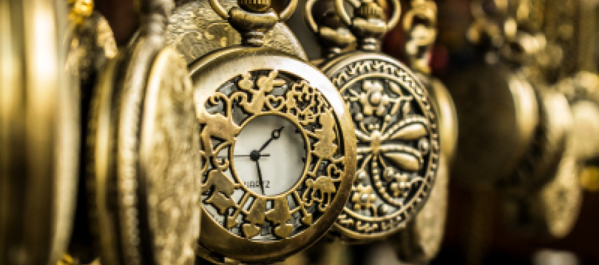

porten
івано-франківськ
В магазинах Торговельній мережі Porten ви можете купити годинник у Бахмуті, Вінниці, Дніпрі, Житомирі, Запоріжжі, Івано-Франківську, Києві, Краматорську, Луцьку, Львові, Одесі, Покровську, Полтаві, Рівному, Слов'янську, Сумах, Тернополі, Харкові, Херсоні, Хмельницькому, Черкасах, Чернівцях, Чернігові , а також багатьох інших містах України


Нова колекція

колекція 2018
Годинники як інструмент визначення часу давно і надійно прижилися в людській реальності. Романтики та прагматики, художники та бізнесмени, чоловіки та жінки, дорослі та діти - всі хочуть знати котра година в потрібний момент. Скільки хвилин пройшло, скільки залишилося, а ще - які саме моделі і якого бренду виблискують на руці у друга, коханої або конкурента. З давніх часів, коли людина здогадався втикнути в землю паличку та іншою поличкою взявся відміряти рівні проміжки часу на піску, не вщухають суперечки - яким повинний бути годинник? Наручним, або настільним, або настінним, або, нарешті, підлоговим? Чому ж кожен діамантик на безеле або шестерінка в механізмі незмінно змушують гордовито випнутися нижню губу володаря аксесуара, а щоки - роздутися?


Статті та корисна інформація
ROGER DUBUIS. ЧАСТИНА 1
Цей чемпіон «гіперхорології» став синонімом надмірності й завдяки своїй радикальній скелетонізованій архітектурі неодноразово демонструє пристрасть до годинного вуайєризму. У цій серії з чотирьох статей описується нещодавня подорож на мануфактуру, де можна було спостерігати за виготовленням та оздобленням деталей, а також за збіркою та регулюванням годинників компанії.

ІСТОРІЯ ЛЮКСОВИХ ГОДИННИКІВ. ЧАСТИНА 1
Історія люксових годинників зародилася дуже давно, вона веде відлік із часів перших годинників у світі. Тоді годинник був розкішшю, яку могла собі дозволити лише найвища еліта суспільства. Навіть не всім, хто має титул і великі гроші, могли виготовити цей розкішний аксесуар. Власне, з того часу мало що змінилося.

ВЕЛИКИЙ ТА СМІЛИВИЙ TISSOT PRS 516 CHRONOGRAPH
На початку цього року компанія Tissot оновила модель PRS 516 Automatic Chronograph, але не пішла вінтажним шляхом. На противагу колекції Heritage із переконливими рімейками вінтажних моделей, PRS 516 – це сучасний хронограф із зухвалим настроєм, безліччю деталей автоспорту й за чудовою ціною.
Наші партнери
про компанію
Компанія PORTEN – лідер на українському ринку годинників. На цей час ми об'єднуємо більше сорока магазинів у різних куточках України та інтернет-магазин, який став першим в нашому сегменті ринку. Торгова мережа PORTEN – офіційний дистриб'ютор більше 50 найвідоміших годинникових марок, починаючи від японської CASIO, закінчуючи швейцарськими LONGINES, ZENITH, TAG HEUER. Однак компанія не обмежується лише годинниками – в інтернет-магазині та бутіках мережі ви знайдете прекрасні ювелірні вироби від таких іменитих брендів, як SWAROVSKI и CHRISTINA.
Категорії
розсилка
Компанія пропонує тільки оригінальну продукцію від найвідоміших світових брендів за найкращою ціною. Ми дбаємо про комфорт наших покупців і постійно розширюємо можливості сервісного обслуговування.